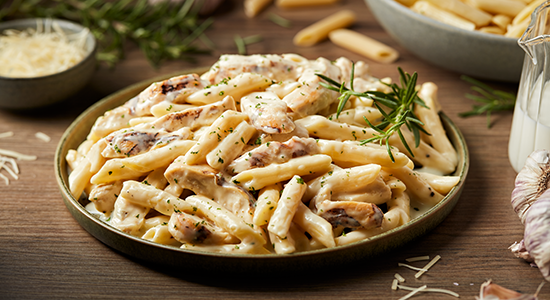

Penne Alfredo

Description
An all-time favourite, this pasta recipe is simple and quick to toss up at home.
Loaded with cheese, you can even toss in some smoked salmon or sausages for some added flavour.
Ingredients
- 100 gm penne pasta
- 1 cup fresh cream
- 2 Tbsp butter
- Salt and pepper to taste
- ½ cup grated Parmesan or cheddar
- A few sprigs fresh basil or parsley
Steps
- Boil water in a sauce pan. Add the penne pasta and let it cook till al dente. Drain and cool.
- Heat butter in a saucepan until it melts, and then quickly pour in the cream. Keep the flame on medium and continue stirring until the sauce thickens.
- Add salt and pepper and mix well. Switch off the flame.
- Tip in the cheese and mix well.
- Add the penne pasta and toss well. Garnish with fresh basil or parsley.